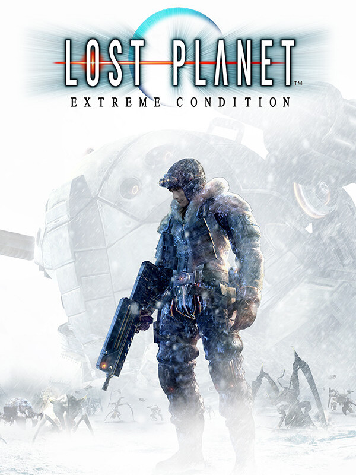

Lost Planet: Extreme Condition
Lost Planet: Extreme Condition
Details
|  | |
| Playtime | Not Played |
| Last Activity | Never |
| Added | 3/10/2022 19:34:27 |
| Modified | 3/10/2022 19:34:37 |
| Completion Status | Not Played |
| Library | Steam |
| Source | Steam |
| Platform | PC (Windows) |
| Release Date | 12/21/2006 |
| Community Score | 70 |
| Critic Score | 74 |
| User Score | |
| Genre | Action Adventure |
| Developer | Capcom K2 LLC |
| Publisher | Capcom |
| Feature | Multiplayer Single Player |
| Links | PCGamingWiki HowLongToBeat IGDB IsThereAnyDeal ProtonDB SteamDB StrategyWiki MobyGames Wikipedia WineHQ WSGF |
| Tag | |
Description
Driven to the brink of extinction on ice-covered wastelands, humankind fights to survive. Battle to survive against gargantuan alien Akrid and treacherous Snow Pirates on the vast and frozen landscape of EDN III. With no allies at your side, the only thing you can trust is your instincts.
Combining a gripping single player campaign and intense multiplayer modes with support for up to 16 players online, Lost Planet is an epic gaming masterpiece. Enormous world maps unfold as players battle across vast snow fields and deserted cities either on foot or in armed, robotic Vital Suits.
Combining a gripping single player campaign and intense multiplayer modes with support for up to 16 players online, Lost Planet is an epic gaming masterpiece. Enormous world maps unfold as players battle across vast snow fields and deserted cities either on foot or in armed, robotic Vital Suits.
Key Features:
- Intense action - A fast-paced third-person shooter with all the depth, intrigue, and intensity of a science fiction classic.
- Foot and vehicle based gameplay - Command highly powered armed vehicles and weapons, including transformable snow vessels.
- Vast environments - Snowstorms, arctic winds, towering buildings and mountains of ice are all stunningly realized as battles occur above and below ground, creating a truly immersive and cinematic event of epic proportions.
- Battle hordes of colossal Akrid.
- Command heavily armored Vital Suits.
- Intense 16 multiplayer action.
- Enhanced DirectX 10 graphics.